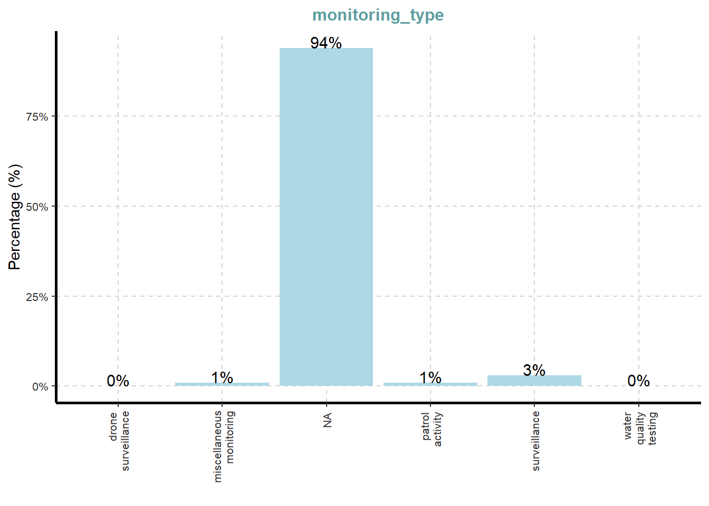
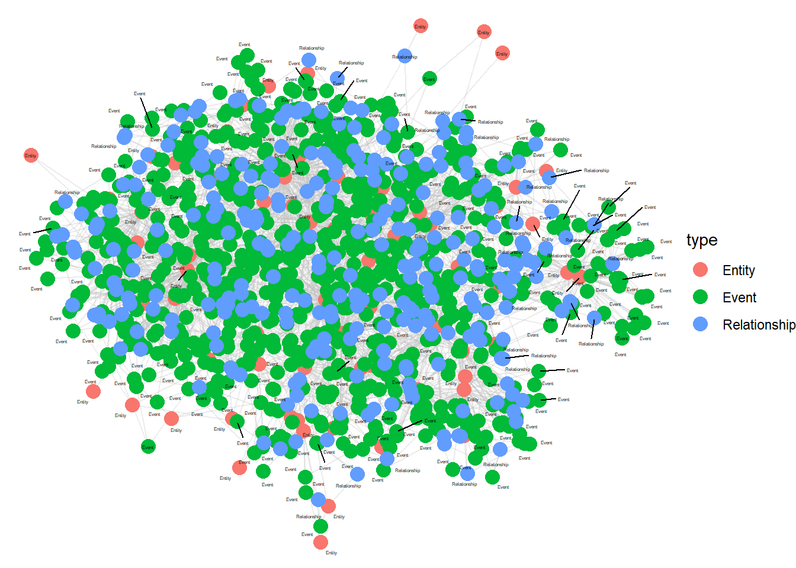

Code
pacman::p_load(tidyverse, jsonlite,
tidygraph, ggraph,
SmartEDA)For this take-home exercise 2, Mini-Challenge 3 will be chosen and the visualisation will be done on this topic. The background of the mini challenge and the questions will be listed below. For this mini challenge, I will only be displaying and addressing Question 3 below.
Over the past decade, the community of Oceanus has faced numerous transformations and challenges evolving from its fishing-centric origins. Following major crackdowns on illegal fishing activities, suspects have shifted investments into more regulated sectors such as the ocean tourism industry, resulting in growing tensions. This increased tourism has recently attracted the likes of international pop star Sailor Shift, who announced plans to film a music video on the island.
Clepper Jessen, a former analyst at FishEye and now a seasoned journalist for the Hacklee Herald, has been keenly observing these rising tensions. Recently, he turned his attention towards the temporary closure of Nemo Reef. By listening to radio communications and utilizing his investigative tools, Clepper uncovered a complex web of expedited approvals and secretive logistics. These efforts revealed a story involving high-level Oceanus officials, Sailor Shift’s team, local influential families, and local conservationist group The Green Guardians, pointing towards a story of corruption and manipulation.
Clepper diligently recorded all intercepted radio communications over the last two weeks. With the help of his intern, they have analyzed their content to identify important events and relationships between key players. The result is a knowledge graph describing the last two weeks on Oceanus. Clepper and his intern have spent a large amount of time generating this knowledge graph, and they would now like some assistance using it to answer the following questions.
Clepper found that messages frequently came in at around the same time each day.
Develop a graph-based visual analytics approach to identify any daily temporal patterns in communications.
How do these patterns shift over the two weeks of observations?
Focus on a specific entity and use this information to determine who has influence over them.
Clepper has noticed that people often communicate with (or about) the same people or vessels, and that grouping them together may help with the investigation.
Use visual analytics to help Clepper understand and explore the interactions and relationships between vessels and people in the knowledge graph.
Are there groups that are more closely associated? If so, what are the topic areas that are predominant for each group?
It was noted by Clepper’s intern that some people and vessels are using pseudonyms to communicate.
Expanding upon your prior visual analytics, determine who is using pseudonyms to communicate, and what these pseudonyms are.
Some that Clepper has already identified include: “Boss”, and “The Lookout”, but there appear to be many more.
To complicate the matter, pseudonyms may be used by multiple people or vessels.
Describe how your visualizations make it easier for Clepper to identify common entities in the knowledge graph.
How does your understanding of activities change given your understanding of pseudonyms?
Clepper suspects that Nadia Conti, who was formerly entangled in an illegal fishing scheme, may have continued illicit activity within Oceanus.
Through visual analytics, provide evidence that Nadia is, or is not, doing something illegal.
Summarize Nadia’s actions visually. Are Clepper’s suspicions justified?
Reflection Questions
Given the task to develop visualizations for knowledge graphs, did you find that the challenge pushed you to develop new techniques for visual representation?
Did you participate in last year’s challenge? If so, did your experience last year help prepare you for this year’s challenge?
What was the most difficult part of working on this year’s data and what could have made it more accessible?
In the code chunk below, p_load() of pacman package is used to load the R packages into R environment.
pacman::p_load(tidyverse, jsonlite,
tidygraph, ggraph,
SmartEDA)For this exercise, mc3.json file will be used. In the code chunk below, fromJSON() of jsonlite package is used to import mc3.json file into R and save the output object.
MC3 <- fromJSON("data/MC3_graph.json")
MC3_schema <- fromJSON("data/MC3_schema.json")In the code chunk below, glimpse() is used to reveal the structure of the mc3 knowledge graph.
glimpse(MC3)List of 5
$ directed : logi TRUE
$ multigraph: logi FALSE
$ graph :List of 4
..$ mode : chr "static"
..$ edge_default: Named list()
..$ node_default: Named list()
..$ name : chr "VAST_MC3_Knowledge_Graph"
$ nodes :'data.frame': 1159 obs. of 31 variables:
..$ type : chr [1:1159] "Entity" "Entity" "Entity" "Entity" ...
..$ label : chr [1:1159] "Sam" "Kelly" "Nadia Conti" "Elise" ...
..$ name : chr [1:1159] "Sam" "Kelly" "Nadia Conti" "Elise" ...
..$ sub_type : chr [1:1159] "Person" "Person" "Person" "Person" ...
..$ id : chr [1:1159] "Sam" "Kelly" "Nadia Conti" "Elise" ...
..$ timestamp : chr [1:1159] NA NA NA NA ...
..$ monitoring_type : chr [1:1159] NA NA NA NA ...
..$ findings : chr [1:1159] NA NA NA NA ...
..$ content : chr [1:1159] NA NA NA NA ...
..$ assessment_type : chr [1:1159] NA NA NA NA ...
..$ results : chr [1:1159] NA NA NA NA ...
..$ movement_type : chr [1:1159] NA NA NA NA ...
..$ destination : chr [1:1159] NA NA NA NA ...
..$ enforcement_type : chr [1:1159] NA NA NA NA ...
..$ outcome : chr [1:1159] NA NA NA NA ...
..$ activity_type : chr [1:1159] NA NA NA NA ...
..$ participants : int [1:1159] NA NA NA NA NA NA NA NA NA NA ...
..$ thing_collected :'data.frame': 1159 obs. of 2 variables:
.. ..$ type: chr [1:1159] NA NA NA NA ...
.. ..$ name: chr [1:1159] NA NA NA NA ...
..$ reference : chr [1:1159] NA NA NA NA ...
..$ date : chr [1:1159] NA NA NA NA ...
..$ time : chr [1:1159] NA NA NA NA ...
..$ friendship_type : chr [1:1159] NA NA NA NA ...
..$ permission_type : chr [1:1159] NA NA NA NA ...
..$ start_date : chr [1:1159] NA NA NA NA ...
..$ end_date : chr [1:1159] NA NA NA NA ...
..$ report_type : chr [1:1159] NA NA NA NA ...
..$ submission_date : chr [1:1159] NA NA NA NA ...
..$ jurisdiction_type: chr [1:1159] NA NA NA NA ...
..$ authority_level : chr [1:1159] NA NA NA NA ...
..$ coordination_type: chr [1:1159] NA NA NA NA ...
..$ operational_role : chr [1:1159] NA NA NA NA ...
$ edges :'data.frame': 3226 obs. of 5 variables:
..$ id : chr [1:3226] "2" "3" "5" "3013" ...
..$ is_inferred: logi [1:3226] TRUE FALSE TRUE TRUE TRUE TRUE ...
..$ source : chr [1:3226] "Sam" "Sam" "Sam" "Sam" ...
..$ target : chr [1:3226] "Relationship_Suspicious_217" "Event_Communication_370" "Event_Assessment_600" "Relationship_Colleagues_430" ...
..$ type : chr [1:3226] NA "sent" NA NA ...Next, as_tibble() of tibble package is used to extract the nodes and links tibble data frames from mc3 tibble dataframe into two separate tibble dataframes called mc3_nodes and mc3_edges respectively.
mc3_nodes <- as_tibble(MC3$nodes)
mc3_edges <- as_tibble(MC3$edges)In the code chunk below, ExpCatViz() of SmartEDA package is used to reveal the frequency distribution of all categorical fields in mc3_nodes tibble dataframe
ExpCatViz(data=mc3_nodes,
col="lightblue")[[1]]
[[2]]
[[3]]
[[4]]
[[5]]
[[6]]
[[7]]
[[8]]
[[9]]
[[10]]
[[11]]
[[12]]
[[13]]
[[14]]
On the other hand, code chunk below uses ExpCATViz() of SmartEDA package to reveal the frequency distribution of all categorical fields in mc3_edges tibble dataframe
ExpCatViz(data=mc3_edges,
col="lightblue")[[1]]
The code chunk below performs the following data cleaning tasks:
convert values in id field into character data type
exclude records with id value
exclude records with similar id values
exclude thing_collected field
save the cleaned tibble dataframe into a new tibble datatable called mc_nodes_cleaned
mc3_nodes_cleaned <- mc3_nodes %>%
mutate(id = as.character(id)) %>%
filter(!is.na(id)) %>%
distinct(id, .keep_all = TRUE) %>%
select(-thing_collected)Next, the code chunk will be used to:
rename source and target fields to form_id and to_id respectively
convert values in from_id and to_id fields to character data type
exclude values in from_id and to_id which is not found in the id field of mc3_nodes_cleaned
exclude records whereby from_id and/or to_id values are missing
save the cleaned tibble dataframe and call it mc3_edges_cleaned
mc3_edges_cleaned <- mc3_edges %>%
rename(from_id = source,
to_id = target) %>%
mutate(across(c(from_id, to_id),
as.character)) %>%
filter(from_id %in% mc3_nodes_cleaned$id,
to_id %in% mc3_nodes_cleaned$id) %>%
filter(!is.na(from_id), !is.na(to_id))Next, code chunk below will be used to create mapping of character id in mc3_nodes_cleaned to row index.
node_index_lookup <- mc3_nodes_cleaned %>%
mutate(.row_id = row_number()) %>%
select(id, .row_id)Next, the code chunk below will be used to join and convert from_id and to_id to integer indices. At the same time, we will drop rows with unmatched nodes.
mc3_edges_indexed <- mc3_edges_cleaned %>%
left_join(node_index_lookup,
by = c("from_id" = "id")) %>%
rename(from = .row_id) %>%
left_join(node_index_lookup,
by = c("to_id" = "id")) %>%
rename(to = .row_id) %>%
select(from, to, is_inferred, type) %>%
filter(!is.na(from) & !is.na(to)) Next, the code chunk below is used to subset nodes to only those referenced by edges
used_node_indices <- sort(
unique(c(mc3_edges_indexed$from,
mc3_edges_indexed$to)))
mc3_nodes_final <- mc3_nodes_cleaned %>%
slice(used_node_indices) %>%
mutate(new_index = row_number())We will then use th code chunk below to rebuild lookup from old index to new index
old_to_new_index <- tibble(
old_index = used_node_indices,
new_index = seq_along(
used_node_indices))Lastly, the code chunk below will be used to update edge indices to match new node table
mc3_edges_final <- mc3_edges_indexed %>%
left_join(old_to_new_index,
by = c("from" = "old_index")) %>%
rename(from_new = new_index) %>%
left_join(old_to_new_index,
by = c("to" = "old_index")) %>%
rename(to_new = new_index) %>%
select(from = from_new, to = to_new,
is_inferred, type)glimpse(mc3_edges_final)Rows: 3,226
Columns: 4
$ from <int> 1, 1, 1, 1, 1, 1, 1, 2, 2, 2, 2, 3, 3, 3, 3, 3, 3, 3, 3, 3…
$ to <int> 1138, 357, 747, 895, 876, 888, 896, 145, 404, 876, 888, 92…
$ is_inferred <lgl> TRUE, FALSE, TRUE, TRUE, TRUE, TRUE, TRUE, FALSE, FALSE, T…
$ type <chr> NA, "sent", NA, NA, NA, NA, NA, "sent", "sent", NA, NA, NA…mc3_graph <- tbl_graph(
nodes = mc3_nodes_final,
edges = mc3_edges_final,
directed = TRUE
)str(mc3_graph)Classes 'tbl_graph', 'igraph' hidden list of 10
$ : num 1159
$ : logi TRUE
$ : num [1:3226] 0 0 0 0 0 0 0 1 1 1 ...
$ : num [1:3226] 1137 356 746 894 875 ...
$ : NULL
$ : NULL
$ : NULL
$ : NULL
$ :List of 4
..$ : num [1:3] 1 0 1
..$ : Named list()
..$ :List of 31
.. ..$ type : chr [1:1159] "Entity" "Entity" "Entity" "Entity" ...
.. ..$ label : chr [1:1159] "Sam" "Kelly" "Nadia Conti" "Elise" ...
.. ..$ name : chr [1:1159] "Sam" "Kelly" "Nadia Conti" "Elise" ...
.. ..$ sub_type : chr [1:1159] "Person" "Person" "Person" "Person" ...
.. ..$ id : chr [1:1159] "Sam" "Kelly" "Nadia Conti" "Elise" ...
.. ..$ timestamp : chr [1:1159] NA NA NA NA ...
.. ..$ monitoring_type : chr [1:1159] NA NA NA NA ...
.. ..$ findings : chr [1:1159] NA NA NA NA ...
.. ..$ content : chr [1:1159] NA NA NA NA ...
.. ..$ assessment_type : chr [1:1159] NA NA NA NA ...
.. ..$ results : chr [1:1159] NA NA NA NA ...
.. ..$ movement_type : chr [1:1159] NA NA NA NA ...
.. ..$ destination : chr [1:1159] NA NA NA NA ...
.. ..$ enforcement_type : chr [1:1159] NA NA NA NA ...
.. ..$ outcome : chr [1:1159] NA NA NA NA ...
.. ..$ activity_type : chr [1:1159] NA NA NA NA ...
.. ..$ participants : int [1:1159] NA NA NA NA NA NA NA NA NA NA ...
.. ..$ reference : chr [1:1159] NA NA NA NA ...
.. ..$ date : chr [1:1159] NA NA NA NA ...
.. ..$ time : chr [1:1159] NA NA NA NA ...
.. ..$ friendship_type : chr [1:1159] NA NA NA NA ...
.. ..$ permission_type : chr [1:1159] NA NA NA NA ...
.. ..$ start_date : chr [1:1159] NA NA NA NA ...
.. ..$ end_date : chr [1:1159] NA NA NA NA ...
.. ..$ report_type : chr [1:1159] NA NA NA NA ...
.. ..$ submission_date : chr [1:1159] NA NA NA NA ...
.. ..$ jurisdiction_type: chr [1:1159] NA NA NA NA ...
.. ..$ authority_level : chr [1:1159] NA NA NA NA ...
.. ..$ coordination_type: chr [1:1159] NA NA NA NA ...
.. ..$ operational_role : chr [1:1159] NA NA NA NA ...
.. ..$ new_index : int [1:1159] 1 2 3 4 5 6 7 8 9 10 ...
..$ :List of 2
.. ..$ is_inferred: logi [1:3226] TRUE FALSE TRUE TRUE TRUE TRUE ...
.. ..$ type : chr [1:3226] NA "sent" NA NA ...
$ :<environment: 0x0000021feaf7d970>
- attr(*, "active")= chr "nodes"Several of the ggraph layouts involve randomisation. In order to ensure reproducibility, it is necessary to set the seed value before plotting by using the code chunk below.
set.seed(1234)In the code chunk below, ggraph fundtions are used to create the whole graph
ggraph(mc3_graph,
layout = "fr") +
geom_edge_link(alpha = 0.3,
colour = "gray") +
geom_node_point(aes(color = `type`),
size = 4) +
geom_node_text(aes(label = type),
repel = TRUE,
size = 1.0) +
theme_void()
library(lubridate) # date‐time parsing
library(tidyverse) # data manipulation & ggplot2
# 1. Extract timestamp of each Communication event
comm_times <- mc3_graph %>%
activate("nodes") %>%
as_tibble() %>%
filter(type=="Event", sub_type=="Communication") %>%
select(id, timestamp) %>%
mutate(
dt = ymd_hms(timestamp), # full POSIX
day = as_date(dt), # calendar date
hour = hour(dt) # hour of day
)
# 2. Count per day/hour
heat <- comm_times %>%
count(day, hour)
# 3. Plot heatmap
ggplot(heat, aes(x = day, y = hour, fill = n)) +
geom_tile(color="white") +
scale_fill_viridis_c(name="Messages") +
scale_y_continuous(breaks=0:23) +
labs(
title = "Communications by Day and Hour",
subtitle = "Two‐week window",
x = "Date", y = "Hour of Day"
) +
theme_minimal() +
theme(axis.text.x = element_text(angle=45, hjust=1))
# 1. Re‐use comm_times from Viz 1
daily_trend <- comm_times %>%
count(day)
# 2. Plot line chart
ggplot(daily_trend, aes(x = day, y = n)) +
geom_line(size=1) +
geom_point(size=2) +
labs(
title = "Daily Communication Volume",
x = "Date", y = "Number of Messages"
) +
theme_minimal()# ─────────────────────────────────────────────────────────────────────────────
# Visualization 1.1: Bar chart of the top 20 words in Communication events
# ─────────────────────────────────────────────────────────────────────────────
library(tidyverse) # dplyr, ggplot2
library(tidytext) # unnest_tokens, stop_words
# 1. Extract all Communication event texts
comms <- mc3_graph %>%
activate("nodes") %>%
as_tibble() %>%
filter(type == "Event", sub_type == "Communication") %>%
select(content) # just keep the text column
# 2. Tokenize into individual words (lowercased)
words <- comms %>%
unnest_tokens(word, content)
# 3. Remove English stop-words (a, the, is, etc.)
data("stop_words") # from tidytext
clean_words <- words %>%
anti_join(stop_words, by = "word")
# 4. Count and keep the top 20 most frequent words
top20 <- clean_words %>%
count(word, sort = TRUE) %>%
slice_max(n, n = 20)
# 5. Plot as a horizontal bar chart
ggplot(top20, aes(x = reorder(word, n), y = n)) +
geom_col(fill = "steelblue") +
coord_flip() +
labs(
title = "Top 20 Words in Communication Events",
x = "Word",
y = "Count"
) +
theme_minimal()library(dplyr)
library(tidygraph)
library(ggraph)
library(igraph) # for arrow() helper
library(grid) # for unit()
# 1. select only the nodes we care about
selected_nodes <- mc3_nodes_final %>%
filter(
(type == "Entity" & sub_type %in% c("Person", "Vessel")) |
(type == "Event" & sub_type == "Communication") |
(type == "Relationship")
) %>%
mutate(idx = row_number()) # new index in the filtered graph
# mapping old_index → new idx
id_map <- selected_nodes %>%
select(old = new_index, new = idx)
# 2. filter edges so both ends are in selected_nodes
selected_edges <- mc3_edges_final %>%
filter(from %in% id_map$old, to %in% id_map$old) %>%
# 3. re-index the endpoints
left_join(id_map, by = c("from" = "old")) %>%
rename(from_new = new) %>%
left_join(id_map, by = c("to" = "old")) %>%
rename(to_new = new) %>%
select(from = from_new, to = to_new, type)library(visNetwork)
library(dplyr)
# — assume selected_nodes and selected_edges have already been defined earlier —
# 1) Filter edges to only the three types we care about
viz_edges <- selected_edges %>%
filter(type %in% c("sent", "received", "evidence_for")) %>%
transmute(
from = from,
to = to,
label = type, # show “sent” / “received” / “evidence_for” on hover
arrows = "to" # add an arrowhead pointing at the “to” node
)
# 2) Build a node table containing every node that appears in viz_edges
all_node_ids <- unique(c(viz_edges$from, viz_edges$to))
viz_nodes <- selected_nodes %>%
filter(idx %in% all_node_ids) %>%
transmute(
id = idx, # must match viz_edges$from/to
label = label, # human‐readable name for hover/selection
group = sub_type # this will drive automatic coloring and legend
)
# 3) A minimal visNetwork call
visNetwork(viz_nodes, viz_edges, width = "100%", height = "700px") %>%
visEdges(
color = list(
color = "#999999", # default edge color (light gray)
highlight = "#FF0000" # color when you hover over an edge
),
arrows = "to"
) %>%
visOptions(
highlightNearest = TRUE, # highlight edges when you hover a node
nodesIdSelection = TRUE # dropdown to select a node by label
) %>%
visLegend(
useGroups = TRUE,
position = "right",
main = "Node Sub-type"
) %>%
visLayout(randomSeed = 123)library(dplyr)
library(visNetwork)
# — assume selected_nodes & selected_edges exist already —
# 1) Filter only the edges we want
viz_edges <- selected_edges %>%
filter(type %in% c("sent", "received", "evidence_for")) %>%
transmute(
from = from,
to = to,
label = type, # hover‐label shows sent/received/evidence_for
arrows = "to" # draw one arrowhead pointing toward the “to” node
)
# 2) Build the node table: color by exact sub_type, which we’ll call “group”
all_node_ids <- unique(c(viz_edges$from, viz_edges$to))
viz_nodes <- selected_nodes %>%
filter(idx %in% all_node_ids) %>%
transmute(
id = idx, # must match viz_edges$from/to
label = label, # human‐readable name under each node
group = sub_type # exact sub_type: Person, Vessel, Communication,
# or any of the eight Relationship subtypes
)
# 3) Draw a visNetwork with multi‐select enabled on “group”
visNetwork(viz_nodes, viz_edges, width = "100%", height = "700px") %>%
visEdges(
arrows = "to",
color = list(color = "#AAAAAA", highlight = "#FF0000"),
width = 4 # thicker edge lines
) %>%
visNodes(
size = 30, # bigger node circles
font = list(size = 20) # bigger node labels
) %>%
visOptions(
highlightNearest = TRUE,
nodesIdSelection = FALSE,
# Here’s the key change: allow multiple groups to be selected at once
selectedBy = list(
variable = "group",
multiple = TRUE, # multi‐select dropdown: you can pick (“Person”, “Vessel”) together
style = 'width:200px; height:26px; font-size:14px;'
)
) %>%
visLegend(
useGroups = TRUE,
position = "right",
main = "Node Sub-types"
) %>%
visLayout(randomSeed = 42)library(dplyr)
library(visNetwork)
# Build a tiny example
sel_nodes <- tibble(
idx = 1:6,
label = c("Alice","Bob","Comm1","Alice","Bob","Comm2"),
sub_type = c("Person","Person","Communication","Person","Person","Communication")
)
sel_edges <- tibble(
from = c(1,3,4,6),
to = c(3,2,6,5),
type = c("sent","received","sent","received")
)
viz_edges <- sel_edges %>%
transmute(from = from, to = to, label = type, arrows = "to")
viz_nodes <- sel_nodes %>%
transmute(id = idx,
label = label,
group = sub_type)
visNetwork(viz_nodes, viz_edges, width="100%", height="400px") %>%
visEdges(arrows="to", width=3) %>%
visNodes(size = 20, font = list(size = 16)) %>%
visOptions(
highlightNearest = TRUE,
nodesIdSelection = FALSE,
selectedBy = list(variable="group", multiple=TRUE)
) %>%
visLegend(useGroups=TRUE, position="right") %>%
visLayout(randomSeed=42)